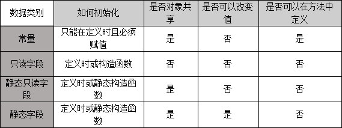

一、常量、只读字段、静态字段和静态只读字段对比
1 public class ModelClass
2 {
3 //常量在定义时必须赋初始值
4 //public const string constField;
5 public const string constField = "常量";
6 public readonly string readField = "只读字段";
7 public static string staticField = "静态字段";
8 public static readonly string staticReadField = "静态只读字段";
9
10 public ModelClass()
11 {
12 //常量的值在编译时就必须知道，而构造函数在运行时才执行，所以常量不能通过构造函数赋初值；而只读字段的值可以在运行时才决定。
13 //constField = "不能在构造函数中初始化常量";
14 readField = "构造函数初始化只读字段";
15 }
16 static ModelClass()
17 {
18 //constField = "不能在静态构造函数中初始化常量";
19 staticField = "静态构造函数初始化静态字段";
20 staticReadField = "静态构造函数初始化静态只读字段";
21 }
22
23 public string Method()
24 {
25 //在方法中定义常量并使用
26 const string constLocal = "局部常量";
27 string result = constLocal;
28 return result;
29 //readonly和static都不能在方法中使用
30 }
31 public static string StaticMethod()
32 {
33 //在静态方法中定义常量并使用
34 const string constLocal = "局部常量";
35 string result = constLocal;
36 return result;
37 //readonly和static都不能在静态方法中使用
38 }
39 }
40 public class RealizeObject
41 {
42 public void Realize()
43 {
44 //常量、静态字段和静态只读字段是类级别的
45 string value1 = ModelClass.constField;
46 string value2 = ModelClass.staticField;
47 string value3 = ModelClass.staticReadField;
48 //只读字段是对象级别的
49 ModelClass model = new ModelClass();
50 string value4 = model.readField;
51 //常量、只读字段和静态只读字段的值不能被修改
52 //ModelClass.constField = "不可以修改常量的值";
53 //model.readField = "不可以修改只读字段的值";
54 //ModelClass.staticReadField = "不可以修改静态只读字段的值";
55 ModelClass.staticField = "可以修改静态字段的值";
56 }
57 }常量、只读字段、静态字段和静态只读字段对比表：

常量、只读字段、静态字段和静态只读字段适用数据：
1、常量适用于定义时就已知且不能改变的数据。
2、只读字段适用于通过第三方在运行时赋值且不能改变的数据（对象独享）。
3、静态只读字段适用于通过第三方在运行时赋值且不能改变的数据（对象共享）。
4、静态字段适用于对象共享的数据。